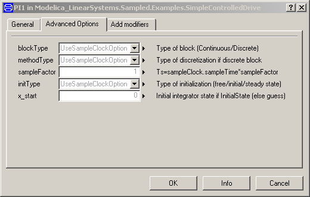
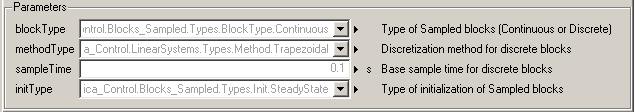

Modelica_LinearSystems2.Controller.UsersGuide
Modelica_LinearSystems2.Controller.UsersGuide
Modelica_LinearSystems2.Controller.UsersGuideLibrary Controller is a Modelica package providing blocks to conveniently model and simulate sampled data systems where it is convenient to quickly switch between a continuous and a discrete block representation.
This package contains the users guide for the library and has the following content:
| Name | Description |
|---|---|
| Getting started | |
| Definition of block properties | |
| Literature | |
| Contact |
Modelica_LinearSystems2.Controller.UsersGuide.GettingStartedThe Controller package provides input/output blocks where every block is available in a continuous and a discrete (sampled) representation. A block is defined via its continuous parameterization. By specifying a discretization method and a sample time, the discrete representation is automatically derived from the continuous form.
The advantage is that, e.g., the continuous representation of a controller is used in detailed non-linear models of a plant. Since the controller is continuous, the simulation is usually much faster because the step size is not constrained by the sample period of the controller. For evaluation and fine tuning purposes, a more detailed representation can be used by switching to its discrete form and adding additional effects such as AD/DA converter, noise, computing delay, etc.
The defaults of the most important options, such as block type (Continuous/Discrete) or base sample time for all blocks are set in the global SampleClock component (via inner/outer). As a result, it is, e.g., easy to switch quickly between a continuous and a discrete representation of all blocks of a controller, by setting the option in the sampleClock component.
Examples to demonstrate the technique are given in sublibrary Examples. Especially, the continuous or discrete control of a simple flexible drive with a P-PI cascade controller is demonstrated in example SimpleControlledDrive.
A screen shot of the diagram layer is shown in the next figure:

Every block has a continuous input and a continuous output. The block might be sampled with the base sampling period defined in sampleClock or with an Integer multiple of it. For example, the PI controller in the above example has the following parameter menus:


By setting, e.g., parameters blockType to "Discrete" and sampleFactor to 10 in the "Advanced" menu, results in a block where the input and the output of the block is sampled by a sampling time that is 10 times slower as the base sample time of the global sampleClock component.
Modelica_LinearSystems2.Controller.UsersGuide.BlockPropertiesBlock SampleClock defines options for all components of the Controller library that are on the same or on a lower level as the sampleClock component. In every block, the default defined in SampleClock can be changed. The following options are available:
With parameter initTtype the initialization of the blocks is defined. Default is steady state initialization (both for continuous and for discrete blocks). With parameter blockType the default block type is defined (Continuous or Discrete). If the Discrete block type is selected, the discretization method is defined via parameter methodType and the basic (periodic) sample time via parameter sampleTime. In every block, the input and output signals are sampled by "sampleTime" or an integer multiple of "sampleTime".
In the Advanced Options menu of every block the following parameters are present:

Parameters blockType, methodType and initType can be used to overwrite the default option defined in SampleClock. The sampleFactor defines the integer multiple of the base sample time of SampleClock that is used for the sampling of the input and output signals of this block.
Modelica_LinearSystems2.Controller.UsersGuide.LiteratureThis library is based on the following references:
Modelica_LinearSystems2.Controller.UsersGuide.ContactAcknowledgements:
HTML-documentation generated by Dymola Tue Sep 08 18:52:57 2009.